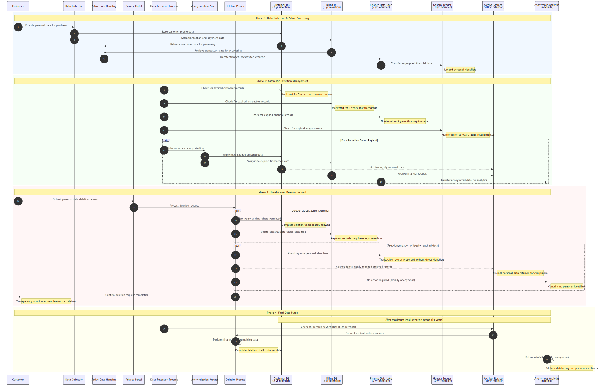

Commerce Financial Platforms (CFP) - Data Retention & Deletion Flow
This diagram shows the lifecycle, retention, and deletion processes for personal data in Microsoft's Commerce Financial Platforms (CFP).
flowchart TB
%% Define styles
classDef external fill:#f9f,stroke:#333,stroke-width:2px
classDef process fill:#bbf,stroke:#333,stroke-width:1px
classDef datastore fill:#dfd,stroke:#333,stroke-width:1px,shape:cylinder
classDef deletion fill:#fdd,stroke:#933,stroke-width:2px
classDef anonymized fill:#cfc,stroke:#393,stroke-width:1px
%% External entities
Customer(["Customer"]):::external
%% Internal processes
DataCollection["Data Collection Process"]:::process
ActiveDataHandling["Active Data Processing"]:::process
PrivacyPortal["Privacy Request Portal"]:::process
DataRetentionProcess["Data Retention Manager"]:::process
AnonymizationProcess["Anonymization Process"]:::process
DeleteProcess["Deletion Process"]:::deletion
%% Data stores
CustomerDB[("Customer Info Database - Names, Contact details, Account IDs [Retention: Active + 2 years]")]:::datastore
BillingDB[("Billing Database - Transaction records, Payment tokens [Retention: 3 years]")]:::datastore
FinanceDataLake[("Finance Data Lake - Transaction records (with IDs), Usage data (pseudonymized) [Retention: 7 years]")]:::datastore
GeneralLedger[("General Ledger System - Aggregated financial data, Limited personal data [Retention: 10 years]")]:::datastore
ArchiveStorage[("Archived Records - Legal compliance data, Pseudonymized [Retention: 7-10 years]")]:::datastore
AnonymousAnalytics[("Anonymous Analytics - Statistical usage data, No personal identifiers [Retention: Indefinite]")]:::anonymized
subgraph MicrosoftBoundary["Microsoft Internal Systems"]
DataCollection
ActiveDataHandling
PrivacyPortal
DataRetentionProcess
AnonymizationProcess
DeleteProcess
subgraph ActiveSystems["Active Systems"]
CustomerDB
BillingDB
end
subgraph RetentionSystems["Retention & Archive Systems"]
FinanceDataLake
GeneralLedger
ArchiveStorage
AnonymousAnalytics
end
end
%% Data flows - Collection and Active Use
Customer -->|"Personal & payment data for purchases"| DataCollection
DataCollection -->|"Customer profile data"| CustomerDB
DataCollection -->|"Transaction data"| BillingDB
CustomerDB <-->|"Customer data for processing"| ActiveDataHandling
BillingDB <-->|"Transaction data for processing"| ActiveDataHandling
ActiveDataHandling -->|"Financial records"| FinanceDataLake
FinanceDataLake -->|"Aggregated financial data"| GeneralLedger
%% Data flows - Retention & Archiving
DataRetentionProcess -->|"Monitor retention periods"| CustomerDB
DataRetentionProcess -->|"Monitor retention periods"| BillingDB
DataRetentionProcess -->|"Monitor retention periods"| FinanceDataLake
DataRetentionProcess -->|"Monitor retention periods"| GeneralLedger
CustomerDB -->|"Archive relevant legal data"| ArchiveStorage
BillingDB -->|"Archive financial records"| ArchiveStorage
FinanceDataLake -->|"Pseudonymize & aggregate"| AnonymousAnalytics
%% Data flows - Deletion Requests
Customer -->|"Data deletion request"| PrivacyPortal
PrivacyPortal -->|"Process deletion requests"| DeleteProcess
DeleteProcess -->|"Delete personal data (where legally permitted)"| CustomerDB
DeleteProcess -->|"Delete personal data (where legally permitted)"| BillingDB
DeleteProcess -->|"Pseudonymize data (retained for legal reasons)"| FinanceDataLake
DeleteProcess -.->|"Cannot delete legally required records"| ArchiveStorage
DeleteProcess -.->|"No action needed (already anonymous)"| AnonymousAnalytics
%% Annotations for retention processes
CustomerDB -.->|"Data deleted 2 years after account closure"| CustomerDB
BillingDB -.->|"Transaction data kept 3 years for support"| BillingDB
FinanceDataLake -.->|"Financial records kept 7 years for tax purposes"| FinanceDataLake
GeneralLedger -.->|"Ledger data kept 10 years for auditing"| GeneralLedger
ArchiveStorage -.->|"Archived with minimal personal data"| ArchiveStorage
AnonymousAnalytics -.->|"No identifiable personal data"| AnonymousAnalytics
#
Data Lifecycle Sequence
This sequence diagram illustrates the temporal flow of personal data through its complete lifecycle in the Commerce Financial Platforms, from initial collection to eventual deletion or anonymization.

Legend
This data retention & deletion flow diagram illustrates:
1. Data Lifecycle: Showing how data moves from active systems to archive/anonymized systems
2.
Retention Periods: Clearly marked retention timeframes for each data store
3.
Deletion Process: How customer deletion requests are handled across systems
4.
Legal Constraints: Indicating where data must be retained for legal/tax purposes
5.
Anonymization: Showing where and how data is anonymized for long-term analytics
Key Data Protection Elements:
- Clear retention periods defined for all personal data
- Automatic deletion triggers based on retention periods
- Process for handling customer deletion requests
- Pseudonymization and anonymization for data that must be retained
- Separation between active systems and archive/analytical systems
#
Detailed Retention Policies
The Commerce Financial Platforms implements time-based retention policies:
1. Active Customer Data: Retained while account is active plus 2 years
2.
Transaction Records: Retained for 3 years from transaction date
3.
Financial Records: Retained for 7 years to meet tax requirements
4.
Ledger Data: Retained for 10 years to meet accounting/audit requirements
5.
Archived Data: Contains minimal personal data, maintained for 7-10 years based on legal requirements
6.
Analytics Data: Fully anonymized with no personal identifiers, retained indefinitely
Customer Rights Implementation
When a customer exercises their deletion rights:
1. Personal data is immediately deleted from active systems where legally permitted
2. Data with legal retention requirements is pseudonymized to remove direct identifiers
3. Customer receives transparent confirmation of what was deleted vs. retained
4. Remaining pseudonymized data is deleted after legal retention periods expire
5. Separation between active systems and archive/analytical systems